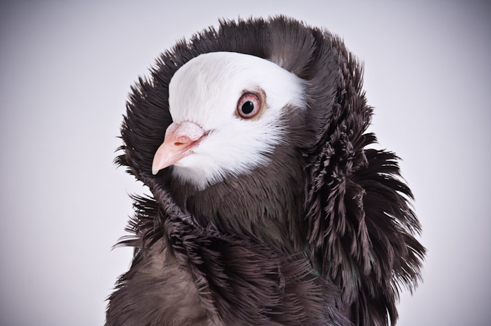

Home
Humans have kept and bred pigeons since the Old Stone Age, it is one of the birds most closely associated with humans. this is no pure coincidence, humans had good reasons for choosing pigeons over other birds. pigeons, unlike other domesticated animals, can easily be mated for life. An owner can pick out the best of his flock and use those to continue his lineage. breeding pigeons comes with quick gratification, as they reproduce very quickly, its no mistake that doves are known as symbols of fertility. one pair of pigeons can have up to 12 offspring in a single year, making it very rewarding to anyone looking to breed the birds. though it wasn't just the reproduction rate that enticed the ancient people to domesticate pigeons. They were an accessible form of protein, people used to eat both the birds and their eggs. their excrement made good fertilizer due to the high content of nitrogen, phosphate, and potassium, all key nutrients for plant growth. Additionally, across many cultures, pigeons were used in rituals, they served as temple offerings and played a role in funerary rites. Pigeons served many purposes for the people of ancient times, all of which helped lead the millennia-long relationship.

An example of a pigeon bred to look fancyThe use of domestic Pigeons became increasingly popular around the 1900s. More people started to keep them as pets and bred pigeons for desirable traits. Charles Darwin's studies on the birds in the mid 1800s brought light to the already popular hobby of pigeon breeding. He helped normalize fancy pigeon breeding as he highlighted their diverse varieties you can get through selective breeding. also in the early 20th century the use of pigeons was increased due to war. they were used in the Franco-Prussian War, then in both WWI and WWII, pigeons were used as messengers. using their homing capabilities, soldiers could quickly send messages across enemy lines.
Carter, Anderson L., David S. Reese, Ronald van Bommel, Marcel T. J. van der Meer, and Canan Çakırlar. “Uncovering the Lives of Rock Doves (Columba livia) in Late Bronze Age Hala Sultan Tekke, Cyprus.” Antiquity 100, no. 412 (August 2026): 979–995. https://doi.org/10.15184/aqy.2026.10351